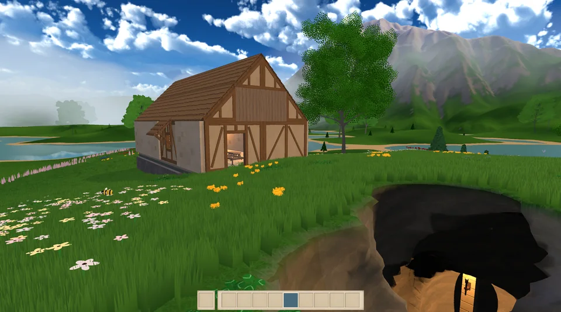

From Terrain to a Playable World
Catching up on terrain erosion, GPU vegetation, modular building, excavation, lighting, and the systems bringing First Settlers together.
Terrain Visuals Improvements
Smoother height maps, LOD stitching, mesh normals, custom shaders, and the beginnings of grass rendering.

Procedural Terrain Generation
Chunk-based streaming, LOD meshes, biome blending, and the evolving approach to rivers.